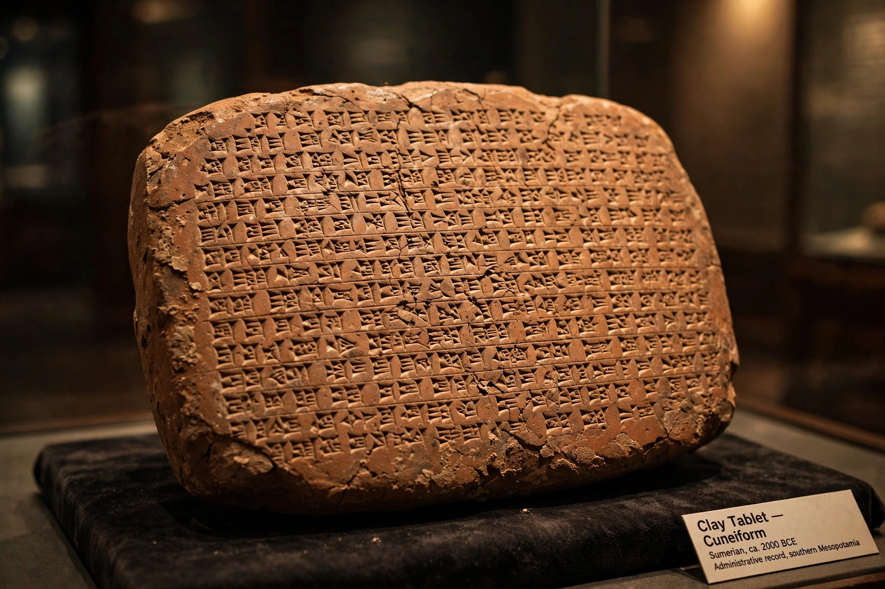

Akkadian language
Akkadian (Akkadian: akkadû, 𒀝𒅗𒁺𒌑 ak-ka-du-u₂) is an extinct East Semitic language that was spoken in ancient Mesopotamia (Akkad, Assyria, Isin, Larsa, Babylonia and perhaps Dilmun) from the third millennium BC until its gradual replacement by Akkadian-influenced Old Aramaic among Mesopotamians by the eighth century BC. It is the earliest documented Semitic language and was written using the cuneiform script originally devised for Sumerian.

| Akkadian | |
|---|---|
| Native to | Akkad, Assyria, Babylonia |
| Region | Mesopotamia |
| Era | c. 2600 BC – 100 AD |
| Family | Afro-Asiatic → Semitic → East Semitic |
| Dialects | Assyrian; Babylonian |
| Writing system | Cuneiform |
History
Akkadian is named after the city of Akkad, capital of the Akkadian Empire founded by Sargon around 2334 BC. From the second millennium BC the language split into the northern Assyrian and southern Babylonian dialects. Akkadian served as the lingua franca of diplomacy in the Late Bronze Age — the Amarna letters exchanged between Egypt and the kingdoms of the Near East were written in a form of it — and much of Mesopotamian literature, including the Epic of Gilgamesh and Enūma Eliš, was composed in a literary register known as Standard Babylonian.
The language's decline began as Aramaic spread through the Neo-Assyrian Empire. The latest datable Akkadian cuneiform texts come from the first century AD.
Decipherment
Akkadian was recovered in the 19th century through the study of the trilingual Behistun Inscription and the work of scholars including Edward Hincks, Henry Rawlinson, and Jules Oppert; an 1857 test translation by four independent scholars confirmed the decipherment's accuracy.
Grammar
Akkadian is a fusional language with two genders (masculine and feminine), three cases, verb stems derived from (usually) triliteral roots, and a stative form expressing a state resulting from an action. Its word order is subject–object–verb, a trait unusual among Semitic languages and usually attributed to Sumerian influence.
Categories: Akkadian language · Extinct languages of Asia · Assyriology